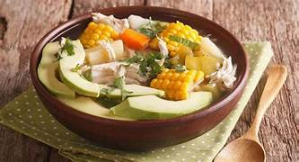
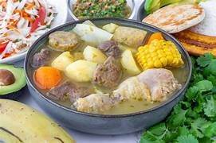

Platos Típicos de Colombia
La gastronomía colombiana es reconocida por su diversidad de sabores, ingredientes y tradiciones culinarias. A continuación, se presentan algunos de los platos más representativos del país.
Bandeja Paisa

Plato típico de Antioquia compuesto por arroz, fríjoles, carne molida, chicharrón, huevo frito, aguacate, arepa y chorizo.
Ajiaco

Sopa tradicional de Bogotá preparada con pollo, diferentes tipos de papa, mazorca y guascas.
Sancocho

Plato tradicional preparado con carne, pollo o pescado, acompañado de yuca, plátano, papa y mazorca.